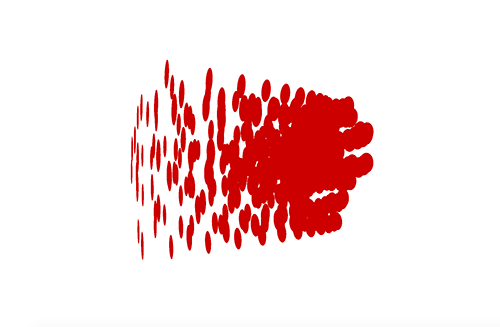
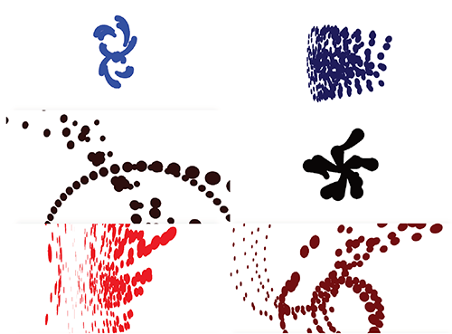

Attack on the System is a screensaver designed to provide a visual of what it looks like when a virus enters the human body and disrupts cell flow. When a virus enters the body it is welcomed by a current healthy cell. The virus then transitions further within the cell and disperses into the nucleus which is the command center of the cell. The nucleus then acts as a copying machine and makes millions of copies of the virus. From there the virus copies eject from the original cell that welcomed the virus and enters other cells within the body. However, millions of virus cells does not equate to the hundred trillion cells within the human body, which is why an immune system is usually able to fight off the virus.
When the page opens a singe ellipse is on the page, which initially represents a virus strain. The ellipse then duplicates itself and transitions on the page to represent the movement of a virus when it enters the human body.
In the case of “Attack of the System”, the virus never dies out. Over time the virus thins out to hint at the idea of what happens when the immune system tries to combat the intrusion, but sometimes the immune system is not strong enough. The colors used for the screensaver directly correlate to what is commonly used in the medical field.
